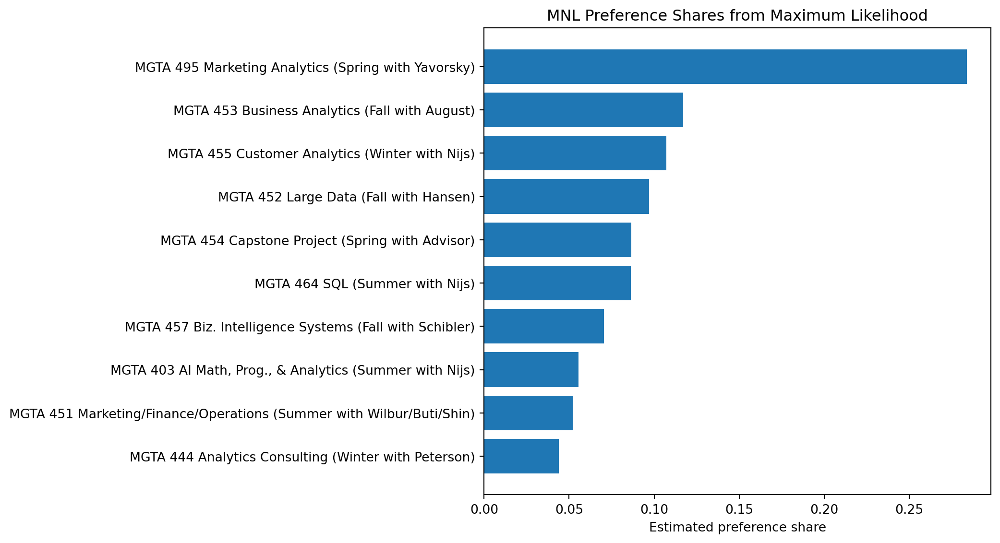
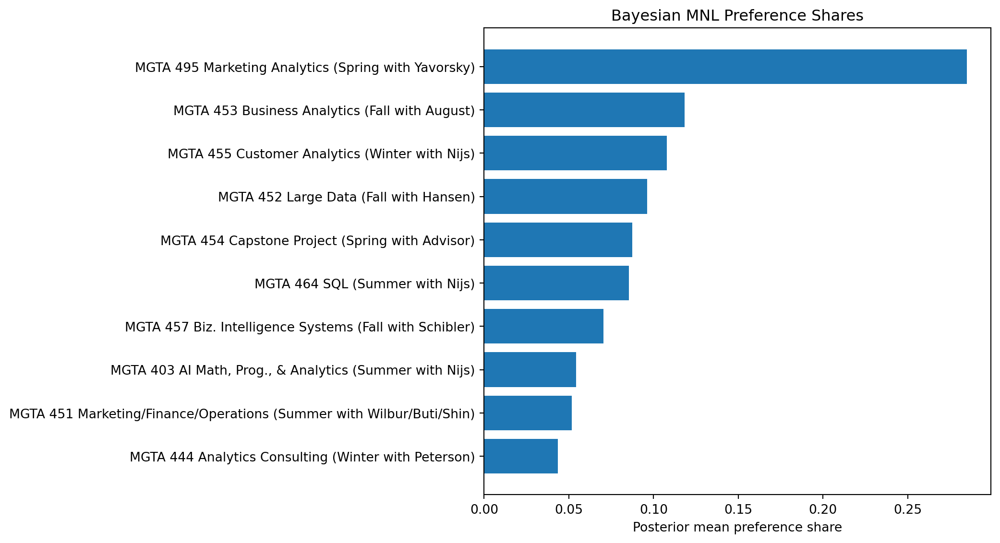

Counts, MLE, and Bayesian Estimation of the MNL Model
Author
Wenwen Zhang
Published
May 25, 2026
Introduction
MaxDiff, or Best-Worst Scaling, is a survey method used to measure relative preferences between items. Instead of asking respondents to rate items on a numeric scale, MaxDiff presents a small set of options and asks respondents to choose the most preferred and least preferred item from that set.
One reason this approach is useful is that people are usually better at making comparisons than assigning absolute ratings. Different people may use rating scales differently, but asking someone to pick a “best” and “worst” option forces clearer trade-offs between items.
In this assignment, the items are the ten core MSBA classes at UCSD Rady. The goal is to estimate students’ relative preferences for these classes using several different approaches and compare how the results differ across methods.
I begin with a simple counts analysis based on how often each class is selected as “best” or “worst.” I then estimate a multinomial logit (MNL) model using maximum likelihood estimation (MLE). Finally, I estimate the same model using a Bayesian approach with a Metropolis-Hastings sampler.
Although I expect the broad rankings of classes to be fairly similar across methods, the methods differ in how they measure uncertainty and how they represent the strength of preferences. Comparing the results across approaches helps illustrate both the intuition and the limitations of each method.
The Data
The main dataset contains the MaxDiff survey design and respondents’ choices. Each row corresponds to one item shown to a respondent during a particular task.
The Response variable records whether the item was selected as the most preferred option (1), the least preferred option (-1), or neither (0).
I also load a separate lookup table that maps item numbers to the actual MSBA class names.
import pandas as pdimport numpy as npimport matplotlib.pyplot as pltraw = pd.read_csv("maxdiff_design_and_choices.csv")labels = pd.read_csv("maxdiff_item_labels.csv")raw.head(3)
Before beginning the analysis, I first check whether the MaxDiff tasks are structured correctly. In a valid MaxDiff task, each respondent should see four items, select exactly one “best” item and one “worst” item, and leave the remaining two items unselected.
The sanity check shows that the dataset contains two different task structures. One group of tasks follows the expected MaxDiff format, with one best choice, one worst choice, two neutral items, and four total rows.
However, another group of tasks contains only two rows, with one best choice and one worst choice but no neutral items. Since these do not match the standard MaxDiff design used in class, I exclude them from the analysis and keep only the tasks with four displayed items.
summary = pd.DataFrame({"Statistic": ["Number of respondents","Tasks per respondent","Items per task","Number of unique classes" ],"Value": [ df["Record ID"].nunique(), df.groupby("Record ID")["Task"].nunique().iloc[0], df.groupby(["Record ID", "Task"]).size().iloc[0], df["Item"].nunique() ]})summary
Statistic
Value
0
Number of respondents
85
1
Tasks per respondent
8
2
Items per task
4
3
Number of unique classes
10
After filtering to valid MaxDiff tasks, the dataset contains 85 respondents. Each respondent completed 8 valid MaxDiff tasks, and each task displayed 4 items. In total, the analysis includes 10 MSBA classes.
The cleaned data now match the structure needed for the counts analysis and the MNL model: each task has one best choice, one worst choice, and two unselected items.
Counts Analysis
I start with a simple counts analysis. For each class, I calculate how often it was selected as the best option and how often it was selected as the worst option, relative to the number of times it was shown.
A positive score means the class was chosen as best more often than worst, while a negative score means the opposite. This is not a full statistical model, but it gives a useful first look at the preference ranking.
From the counts analysis, the rankings show fairly clear differences in student preferences across classes.
MGTA 495 Marketing Analytics has the highest score by a noticeable margin, meaning it was selected as “best” much more often than “worst.” MGTA 453 Business Analytics and MGTA 455 Customer Analytics also received relatively strong positive scores.
On the other hand, MGTA 444 Analytics Consulting and MGTA 451 Marketing/Finance/Operations received the lowest scores, indicating that these classes were chosen as “worst” more frequently than “best.”
One interesting pattern is that the rankings are not simply split between technical and non-technical courses. Some applied analytics classes appear very popular, while some broader or more consulting-oriented classes receive weaker preference scores.
Overall, the counts analysis provides a useful first summary of preferences, although it does not yet account for uncertainty or the structure of repeated choices within respondents.
From MaxDiff Data to MNL Choices
To estimate a multinomial logit (MNL) model, the MaxDiff responses must first be interpreted as choice observations.
In each task, respondents see four classes and choose the one they prefer most and the one they prefer least. The MNL framework assumes that each class has an underlying utility value, and respondents are more likely to choose items with higher utility.
If a task contains items \(a, b, c, d\), the probability that item \(b\) is selected as the “best” option is modeled using the softmax function:
After the best item is selected, the worst choice is modeled from the remaining items. Intuitively, choosing a “worst” item means selecting the item with the lowest utility. This can be represented by flipping the signs of the utilities:
\[
P(\\text{worst} = c \\mid \\text{best} = b) =
\\frac{\\exp(-\\beta_c)}
{\\exp(-\\beta_a) + \\exp(-\\beta_c) + \\exp(-\\beta_d)}
\]
As a result, each MaxDiff task contributes two MNL-style observations: one for the best choice and one for the worst choice.
One important issue is that the model is only identified up to an additive constant. Adding the same number to every utility value does not change the choice probabilities. To solve this problem, I normalize one class coefficient to zero and estimate the remaining coefficients relative to that reference class.
The reshaped dataset now stores one row per MaxDiff task rather than one row per item. Each row contains the four displayed classes, along with the class selected as “best” and the class selected as “worst.”
For example, the first task shown above contains the items [5, 7, 4, 1]. In that task, item 7 was selected as the most preferred option, while item 1 was selected as the least preferred option.
This structure is much more convenient for likelihood-based estimation because the full choice set for each task is now stored together in a single observation.
MNL via Maximum Likelihood
Next, I estimate a multinomial logit model using maximum likelihood. In this model, each class has a utility value, and classes with higher utility are more likely to be chosen as “best.”
For each MaxDiff task, the likelihood has two parts: the probability of the best choice from the full set of four classes, and the probability of the worst choice from the remaining three classes after reversing the sign of utility.
Here, (b_t) is the item chosen as best in task (t), (w_t) is the item chosen as worst, and (C_t) is the set of four items shown in that task.
Because only differences in utility matter in the softmax model, I set the utility of item 1 to zero and estimate the other nine utilities relative to it.
Because the numerical optimization can take a long time during rendering, I save the converged MLE estimates from the optimization step and reuse them in the remaining analysis.
mle_plot = mle_table.sort_values("Preference Share")plt.figure(figsize=(11, 6))plt.barh(mle_plot["Class"], mle_plot["Preference Share"])plt.xlabel("Estimated preference share")plt.title("MNL Preference Shares from Maximum Likelihood")plt.tight_layout()plt.show()

The MNL estimates produce a ranking that is broadly consistent with the earlier counts analysis. MGTA 495 Marketing Analytics receives the highest estimated preference share by a large margin, suggesting that students consistently view this class very favorably relative to the others.
Several other analytics-focused classes, including MGTA 453 Business Analytics and MGTA 455 Customer Analytics, also receive relatively high preference shares. In contrast, MGTA 444 Analytics Consulting and MGTA 451 Marketing/Finance/Operations appear near the bottom of the ranking.
Compared to the simple counts analysis, the MNL model produces smoother differences across classes because it explicitly models the choice process rather than relying only on raw counts. However, the overall ordering of classes remains fairly stable across the two methods.
The estimated standard errors are relatively small for most classes, which suggests that the rankings are reasonably precise given the sample size in the survey.
MNL via Bayesian Estimation
Finally, I estimate the same MNL model using a Bayesian approach. Instead of only finding one set of coefficient estimates, the Bayesian method gives a distribution of plausible values for each class utility.
The posterior distribution is proportional to the likelihood times the prior:
I use a weakly informative normal prior centered at zero. This keeps the estimates from becoming extreme, but still allows the data to drive the results. I use the same normalization as before, setting item 1 equal to zero and estimating the remaining nine coefficients.
To sample from the posterior, I use a random-walk Metropolis-Hastings algorithm. At each step, the sampler proposes a small change to the current coefficient vector. If the proposed values improve the posterior fit, they are likely to be accepted; if not, they may still be accepted with some probability.
from scipy.special import logsumexpdef neg_log_likelihood(theta): beta = make_beta(theta) ll =0.0for _, row in tasks_df.iterrows(): items = row["items"] best = row["best"] worst = row["worst"] utilities = np.array([beta[i] for i in items]) ll += beta[best] - logsumexp(utilities) remaining = [i for i in items if i != best] worst_utilities = np.array([-beta[i] for i in remaining]) ll +=-beta[worst] - logsumexp(worst_utilities)return-ll
The acceptance rate is in a reasonable range for a random-walk Metropolis sampler. This suggests that the proposal step size is working reasonably well and the chain is able to explore the posterior distribution without getting stuck.
The trace plots fluctuate around relatively stable values rather than drifting systematically upward or downward. This suggests that the Metropolis-Hastings sampler has stabilized after the burn-in period and is exploring the posterior distribution reasonably well.
The chains also appear to move around the parameter space without getting stuck for long periods of time, which is consistent with the reasonable acceptance rate observed earlier.
bayes_plot = bayes_table.sort_values("Posterior Mean Share")plt.figure(figsize=(11, 6))plt.barh(bayes_plot["Class"], bayes_plot["Posterior Mean Share"])plt.xlabel("Posterior mean preference share")plt.title("Bayesian MNL Preference Shares")plt.tight_layout()plt.show()

The Bayesian ranking is very similar to the earlier MLE results. MGTA 495 Marketing Analytics still stands out as the most preferred class, with a posterior mean share close to 0.29. Business Analytics and Customer Analytics also receive relatively high preference shares.
On the other hand, Analytics Consulting and Marketing/Finance/Operations remain near the bottom of the ranking. Most of the classes in the middle have fairly similar posterior shares, so small differences in their ordering should probably not be interpreted too strongly.
Overall, the Bayesian estimates tell a very similar story to the MLE approach, which gives some confidence that the main ranking patterns are fairly stable across estimation methods.
Comparing the Three Methods
To compare the three approaches, I combine the main results from the counts analysis, the MLE model, and the Bayesian model into a single table.
The three methods produce very similar rankings overall. In all three approaches, MGTA 495 Marketing Analytics is clearly the most preferred class. Business Analytics and Customer Analytics also consistently rank near the top.
At the lower end of the rankings, Analytics Consulting and Marketing/Finance/Operations remain among the least preferred classes across all methods.
The biggest differences appear in the middle of the rankings, where several classes have fairly similar preference levels. Small changes in the estimation method can slightly change their ordering, but the overall pattern remains fairly stable.
Compared to the simple counts analysis, the MNL models make fuller use of the survey structure because they explicitly model the probability of both the best and worst choices. The Bayesian approach produces results that are very close to the MLE estimates while also providing uncertainty intervals through the posterior draws.
Overall, the consistency across the three methods gives some confidence that the main preference patterns in the survey are relatively robust.
Discussion
Across all three methods, MGTA 495 Marketing Analytics is consistently the most preferred class. Business Analytics, Customer Analytics, and Large Data also rank fairly highly in most of the analyses. Meanwhile, Analytics Consulting and Marketing/Finance/Operations usually appear near the bottom.
One thing I noticed is that the rankings are much more stable at the top and bottom than in the middle. Classes like SQL, Capstone Project, and Business Intelligence move around slightly depending on the method that is used. That probably means students view those classes somewhat similarly.
The counts analysis is useful as a quick summary because it is easy to compute and interpret. However, it does not really model the actual choice process in the survey. The MLE multinomial logit model makes fuller use of the MaxDiff structure and gives more interpretable utility estimates and preference shares.
The Bayesian model produces results that are very close to the MLE estimates, which is reassuring. I also like that the Bayesian approach gives credible intervals and lets us look at uncertainty more directly through the posterior draws.
There are still some limitations to this analysis. The survey only includes responses from a particular group of MSBA students, so the results may not generalize beyond this sample. Preferences may also depend on factors that are not captured in the data, such as career goals, prior experience, or scheduling preferences.
If I continued working on this project, I would probably look at whether preferences differ across different types of students. It could also be interesting to extend the Bayesian model to allow for more individual-level variation in preferences.